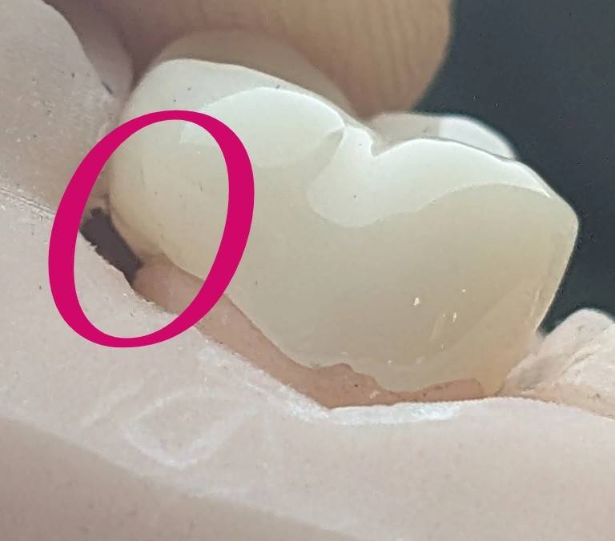

🟦 Insight 32 — کانتور مقعر در روکش سرامیکی
تاریخ انتشار:
آخرین بازبینی:

📝 توضیح بالینی
- در بررسی یک روکش سرامیکی که از لابراتوار ارسال شده بود، علاوه بر اینکه روی کست پرینتشده نیز محل مارژینها بهدرستی تطابق نداشت، در ناحیه مشخصشده از سطح روکش ودر امبراژور، کانتور بهصورت مقعر طراحی شده بود.
- در طراحی صحیح روکشها، بهویژه در نواحی تماس با بافت نرم و امبراژورها، کانتور معمولاً باید بهصورت محدب (Convex) یا حداقل هموار باشد.
- ایجاد سطح مقعر در این نواحی میتواند باعث تجمع پلاک و باقیماندن مواد غذایی شود و کنترل بهداشت برای بیمار را دشوار کند.
- به همین دلیل یکی از مراحل مهم در ارزیابی کار لابراتوار، بررسی دقیق کانتور روکش قبل از تحویل به بیمار است.
- حتی اگر مارژین قابل قبول باشد، کانتور نامناسب میتواند در درازمدت باعث التهاب لثه و مشکلات پریودنتال شود.
- در این کیس به دلیل وجود کانتور مقعر در ناحیه مورد نظر و همچنین اشکال در تطابق مارژینها روی کست، روکش جهت اصلاح و ساخت مجدد به لابراتوار بازگردانده شد.
محتوای این صفحه برای استفادهٔ آموزشی دندانپزشکان و دانشجویان دندانپزشکی تهیه شده است.